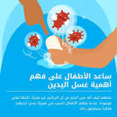
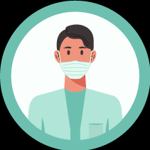
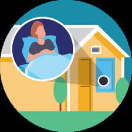

Clean your hands often
Wash your hands regularly with soap and water for at least 20 seconds,* says HealthLink BC.

Avoid touching your face
Take special care not to touch your eyes, nose, and mouth with unwashed hands, since these are the most likely ways for the virus to enter your body,* advises the World Health Organization.

Clean and disinfect frequently touched surfaces
Potentially contaminated surfaces may include tables, doorknobs, light switches, countertops, handles, desks, phones, keyboards, toilets, faucets and sinks,* says the Centers for Disease Control and Prevention.

Practice good respiratory hygiene
Cover your mouth and nose with your elbow or tissue when you cough or sneeze. Dispose of the used tissue and immediately wash your hands for at least 20 seconds,* advises Mayo Clinic.

Greet without physical contact
Avoid close contact with others if you feel unwell. If you have a cough or fever, seek medical attention.

Stay at home , if you feel sick
All our partners only use reusable containers to package all your meals.
What can I do to avoid becoming ill?
You shouldn't
-
Do not panic! -
Do not touch your face -
Do not stockpile on masks -
Do not travel unless necessary -
Do not go to crowded places -
Do not believe everything on the internet -
Do not seek alternative treatments -
Do not take antibiotics -
Skip the flu shot -
Do not propagate hostility against Asians
Ttle
-
Get vaccinated -
Avoid close contact with anyone who is sick or has symptoms e -
Keep distance between yourself and others when you're in indoor public spaces -
Avoid crowds and indoor places that have poor airflow (ventilation). -
Wash your hands often with soap and water for at least 20 seconds -
Wear a face mask in indoor public spaces -
Cover your mouth and nose with your elbow or a tissue when you cough or sneeze -
Avoid touching your eyes, nose and mouth -
Clean and disinfect often-touched surfaces regularly